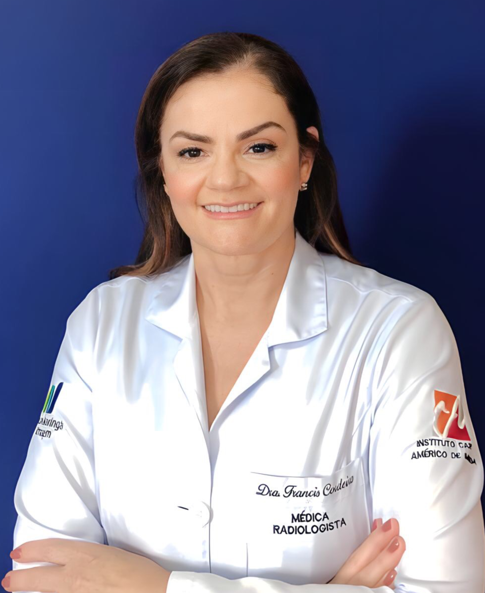

A evolução da dermatologia diagnóstica em Maringá. Identificação precisa de preenchedores, bioestimuladores de colágeno, fios e anatomia vascular em tempo real — prevenindo complicações e orientando procedimentos médicos.
+70 Anos
De Tradição em Maringá (1954)
18-26 MHz
Transdutores HD de Altíssima Frequência
100%
Foco em Segurança e Anatomia Vascular
Diferente do ultrassom convencional, os transdutores dermatológicos de alta frequência (18 a 26 MHz) permitem diferenciar epiderme, derme, tecido subcutâneo e o sistema muloaponeurótico (SMAS) com alta definição.
Mapeia o trajeto das artérias faciais, identificando variações anatômicas do paciente para evitar oclusões e necrose tecidual.
Caracterização da substância injetada: Ácido Hialurônico, Hidroxiapatita de Cálcio (Radiesse), Ácido Poli-L-Láctico (Sculptra/Elleva), PMMA, Silicone Industrial ou Fios de Sustentação, entre outros.
O IMI oferece suporte completo antes de realizar um novo procedimento, no acompanhamento de rotina ou na resolução de intercorrências.
Identifica e localiza preenchedores, bioestimuladores, fios e implantes.
Nódulos, ETIP, abscessos e oclusões vasculares.
Cistos, sólidas, vasculares, inflamatórias ou tumorais. Avaliação de patologias ungueais, couro cabeludo, nervos periféricos e lipedema.
Análise detalhada das camadas da pele e estruturas subjacentes.
O Instituto Maringá de Imagem atua como um verdadeiro parceiro técnico da sua clínica. Disponibilizamos laudos iconográficos com documentação fotográfica ultrassonográfica, mapeamento Doppler colorido e canal direto de discussão de casos com nossos radiologistas especializados.
Acesse nosso modelo de pedido médico estruturado ou envie seus dados para cadastro como profissional parceiro.
Sou Médico SolicitanteFundado em 1954, o IMI possui a história mais sólida em diagnóstico por imagem de Maringá, unindo tradição técnica e constante atualização com tecnologias mundiais de ponta.
Exames laudados e supervisionados por médicos radiologistas experientes. Com Título de Especialista (RQE), pós-graduação e fellowship em clínicas e institutos referência na área. Possui treinamento específico para ultrassonografia de alta frequência da pele.
Equipamentos dotados de sondas de altíssima frequência (18-26 MHz), essenciais para o mapeamento cutâneo e vascular estético.
Para garantir a máxima precisão diagnóstica, priorizamos o atendimento com encaminhamento médico. Preencha os dados abaixo e nossa equipe entrará em contato rápido via WhatsApp.
Respostas para as principais perguntas sobre o ultrassom dermatológico HD.
O laudo Iconográfico é emitido com rigor técnico pelo corpo de médicos radiologistas do IMI, contendo imagens de alta definição, medições das camadas e avaliação Doppler. Ele fica disponível digitalmente no portal do IMI e pode ser compartilhado diretamente com seu médico.
Médicos Especialistas em Ultrassonografia Dermatológica
CRM 11804/PR • RQE 4201

Corpo Clínico IMI RadiologiaCRM 15007/PR • RQE 12892
CRM 34.680/PR • RQE 27911